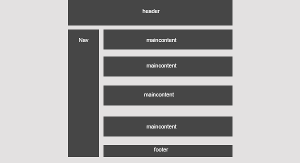

Om Siden
Planlegging og skissetegning
Jeg begynte å planlegge nettsiden min ved å finne inspiriasjon på nettet. Etter å funnet noen eksempler på sider begynte jeg å skissere en nettside. Etter forelesningen om grid layout, ble jeg nyskjerrig og ville prøve det selv. Jeg begynte med designet under, men etter en stund ville jeg bytte til et litt simplere design uten boksen på siden. Jeg føler at designet jeg ble bedre enn jeg hadde skissert.

| Beskrivelse | URL |
|---|---|
| Ikon-font for header | fontawesome.io |
| Google Developers CSS Grid | developers.google.com |
| Navbar w3 school | w3schools.com |
| SVG Eksempler | w3schools.com |
| Om MathML | tutorialspoint.com |
| Git og Github | codefellows.org |
| test | urlnavn |